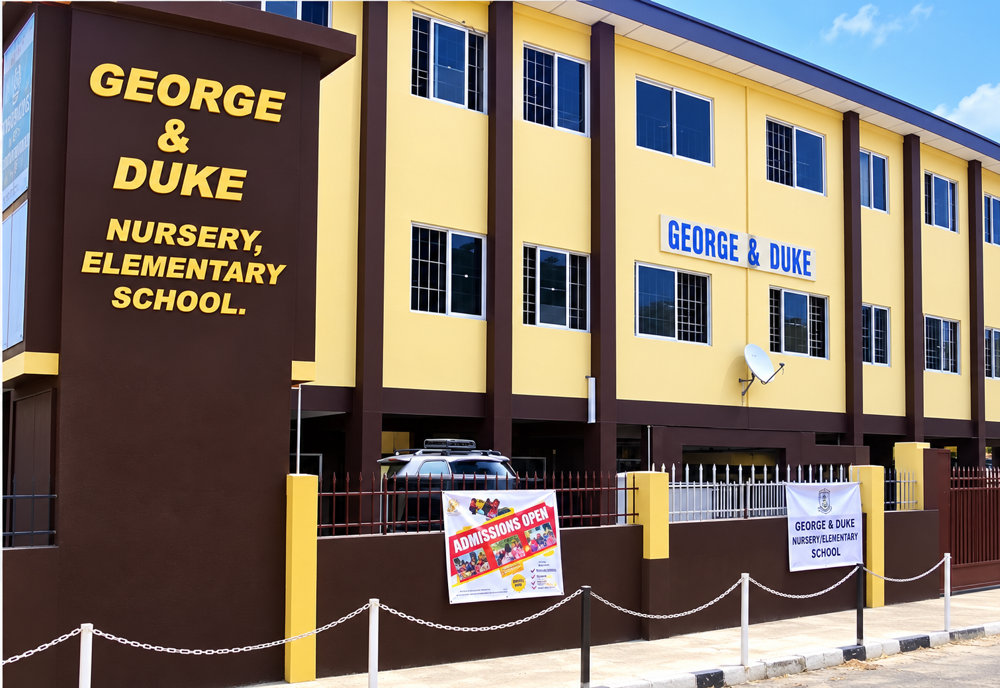
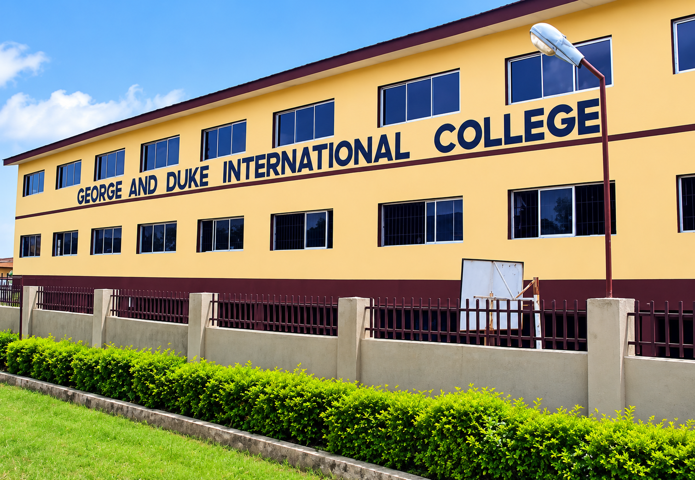
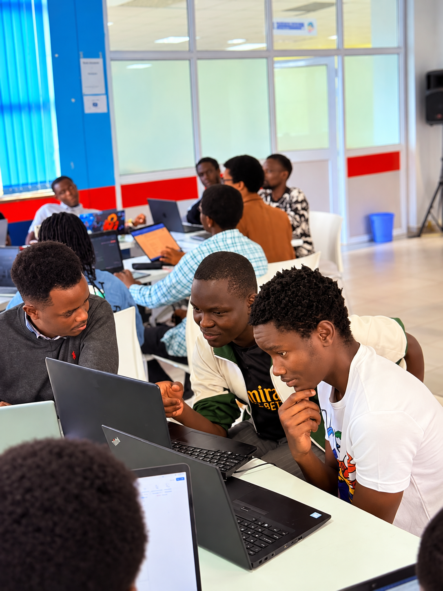

Division 01
Nursery & Elementary
Ages: 1.5 – 11 Years
Campus: Felele, Ibadan
Option: Day Students
Examinations: National Common Entrance, State Placement
Academic Divisions
George & Duke delivers tailored educational environments spanning early childhood foundation, secondary international college, and advanced level university preparatory studies in Ibadan.
Educational Continuum
Each school division features dedicated facilities, specialized curricula, and expert educators committed to meeting students at their stage of learning.

Established in 1995, our Nursery & Elementary School provides a joyful, safe, and stimulating environment for young minds. We combine the British Early Years Foundation Stage (EYFS) and the Nigerian National Primary Curriculum to foster early literacy, numeracy, social skills, and creative discovery.
Our child-centred approach ensures small class sizes and personalized attention. Pupils build confidence through phonics, hands-on science activities, practical art, music, physical play, and character education grounded in kindness, discipline, and respect.

Established in 2000, George & Duke International College is our premier co-educational secondary school. We deliver a comprehensive dual curriculum integrating the Nigerian National Curriculum with British Cambridge Secondary curricula to prepare students for BECE, WAEC (WASSCE), NECO (SSCE), and Cambridge IGCSE.
The college features cutting-edge science and computing laboratories, practical agricultural farmlands, creative arts workshops, and comfortable boarding hostels. Beyond examinations, students engage in competitive sports, robotics, debate societies, and leadership roles.

Our Advanced Level School is a distinguished pre-university center preparing ambitious secondary school leavers for seamless direct entry into 200-level undergraduate programmes in prestigious Nigerian and international universities.
We provide intensive, tutorial-style instruction for Cambridge Assessment International Education (CAIE) A-Levels, JUPEB, and IJMB. With small tutorial groups, dedicated subject specialists, rigorous mock examinations, and comprehensive university counseling, our students achieve world-class results.
Academic Comparison
A quick overview of key programme details across George & Duke Institutions.
Division 01
Ages: 1.5 – 11 Years
Campus: Felele, Ibadan
Option: Day Students
Examinations: National Common Entrance, State Placement
Division 02
Ages: 11 – 16 Years
Campus: Odo-Ona Elewe, Ibadan
Option: Day & Boarding
Examinations: BECE, WAEC (WASSCE), NECO (SSCE), IGCSE
Division 03
Ages: 16+ Years
Campus: Odo-Ona Elewe, Ibadan
Option: Day & Boarding
Examinations: Cambridge A-Levels, JUPEB, IJMB Direct Entry